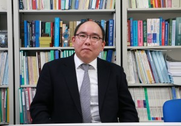

2016.05.09記事掲載
大阪府立大学Webマガジン「MICHITAKE PLUS」に掲載されました。
目標は「試作レス」。ものづくりに直結する技術で社会のニーズにこたえる
柴原研究室の取り組みが大阪府立大学Webマガジン「MICHITAKE PLUS」に掲載されました。
MICHIKETE PLUS
目標は「試作レス」ものづくりに直結する技術で社会のニーズにこたえる／工学研究科 柴原 正和准教授
2015年度、日産自動車と大阪府立大学は、自動車ボディー用鋼板の溶接にかかわる技術を共同開発しました。この技術には、本学の大学院工学研究科 航空宇宙海洋系専攻 海洋システム工学分野の柴原正和准教授の「理想化陽解法FEM」が活用されています。
今回は柴原正和准教授に、「ものづくり」を大幅に省力化する理想化陽解法FEMという技術や企業との共同研究について、お話をうかがいました。

―日産自動車とはどのような共同研究を進められているのですか。―
自動車ボディー用鋼板を溶接する際の最適条件を素早く解析する技術を共同開発しました。
―具体的にはどのような技術か教えてください。―
溶接とは、鋼板に電流を流し一部を溶かすことで、鋼板と鋼板を接合する手法であり、1mm以下の精密機械から300mもある巨大な船まで、ほとんどすべてのものづくりに用いられています。自動車製造の場合は、薄板を数枚重ね合わせ、溶接することで車体を形作ります。
しかし、電流を流す条件（電流を流す時間や、電流値、溶接する間隔など）が整っていないと、鋼板が溶けすぎてしまったり、ひずみができてしまいます。その原因は、人の目で外から見るだけでは分からないため、これまでは実際に試作品を作り、何度も試作を繰り返すことで、その最適条件を探ってきました。
我々の開発した「理想化陽解法FEM」というコンピューターを使った解析技術を活用し「対象物にどのような力が加わって、どのようなことが起こっているか」を解析することで、最適条件を速く正確に割り出せるようにしました。
―この技術によって、どのような効果が見込めるのでしょうか。―
これまで、ものづくりの現場では「試作」に膨大な時間がかかっていました。これを、コンピューター上でシミュレーションすることで、時間を短縮し、費用を抑えることができます。日産自動車の場合、試作から製造ラインに適用するまでの時間が1/6になりました。
―これまでこのような技術はなかったのですか。―
私が学生の頃もシミュレーション技術はありましたが、一枚の板と板の溶接がやっとで、複雑な解析はできませんでした。
それに比べ、本研究室で開発を進めている理想化陽解法FEMは他の汎用ソフトに比べて解析スピードが速く、従来の数百倍の大きさを対象とすることができるので実用性が高いです。
―いろいろな商品に応用できるということですか。―
はい。理想化陽解法FEMは、溶接の際、対象物に「何が起きているか」を可視化できます。例えば、精密機械の製造過程で10万個に一つ発生する原因不明のエラーの発生確率を下げるために、理想化陽解法FEMで可視化した情報が活用されています。
今では、企業から「○○のような問題を解析することはできますか？」という依頼が多く寄せられます。
―理想化陽解法FEMの開発において、どのような点でご苦労されましたか。―
開発段階では色々苦労がありました。その中でも、プログラミングに携わっていただいた生島先生には、ご苦労をおかけしました。なかなか数値が合わず何度も試行錯誤を重ねた末、完成にこぎつけることができました。研究成果は、当研究室の学生の皆さん、生島一樹先生、河原充先生、裏方で献身的に支えて頂いた、秘書の桃木めぐみさんたちの日々の努力の賜であり、皆さんの支えがあってこそ実を結んだ成果であると思います。また、自由に研究を進められる設備・環境を与えて頂いた海洋システム工学分野の先生方にも大変感謝しております。このように、多くの方々のご支援があってこそ挙げられた成果であると考えております。
―次に、企業との共同研究についてお話を聞かせてください。現在、何社の企業と共同研究を進められているのですか。―
年間２０～３０社の企業と共同研究を行っています。
―企業と共同研究を始めるきっかけを教えてください。―
さまざまです。学会などで、研究内容を見て声をかけていただいたり、コーディネーターの方からご紹介いただくケースもあります。日産自動車の場合は、大阪大学と東京理科大学と広島大学と共同行っていた研究会がきっかけでした。
―企業との共同研究について、先生はどのようにお考えですか。―
2009年頃、理想化陽解法FEMの立ち上げ当初はなかなかうまくいかず、共同研究先の企業の方々にもご迷惑をおかけしたこともありました。ただ、あきらめずに共同研究を進めることで、徐々にノウハウが蓄積され、さまざまな企業ニーズにお応えできるようになりました。
一方で、企業との共同研究は学生にとっても貴重な経験になります。大学の中だけで研究していると、自分の研究と社会のつながり、世の中にどう役立つかが分かりにくい。企業や他大学と研究する機会があると、自分たちの立ち位置や求められていることがイメージしやすいと思います。
―今後、研究活動を通じて実現したいことは？―
「溶接」と一言で言っても、さまざまな行程があります。現在は、それぞれ個々の行程の研究がなされているのですが、それらを一貫して解析したり、必要な項目だけをピックアップして検証できるようにしたいです。こういった研究は内閣府の国家プロジェクトとしても進められており、私たちも参加させていただいています。
ただし、単純にツールを開発するだけではなく、あくまでも技術革新による「試作レス」が最終目標です。無駄のないものづくりを目指すことで、世の中を変えていきたいです。
―先生の研究室にはどのような学生がいらっしゃいますか―
どちらかというと、数年後、数十年後に実を結ぶというような夢のある研究ではなく、今まさに最先端といえる技術を学び、企業などで活用したいと考えている現実志向の学生が多いです。企業と共同研究を進める中で、そのままその企業の研究室に就職するケースも増えてきています。企業で問題となっている事象に対するアプローチ方法や解決の方法、解析ソフトを使うノウハウなどが身についているので、企業にとっても魅力的な人材なのではないでしょうか。
―学生の皆さんに向けてメッセージをお願いします。―
実務につながる技術やノウハウは重要であり、社会が即戦力となる人材を求めているのは事実です。しかし、現場で起きているさまざまな問題の検証には、技術の基礎になる「理論」の習得が必要不可欠です。解析や最先端技術だけでなく、プログラミングや力学、数学等の基礎学問についても一生懸命学び、新しいことに果敢にチャレンジし、どんどん視野を広げてほしいと思います。
今回、日産自動車との共同研究の新聞報道をきっかけに柴原先生を取材し、想像以上に多くの企業から共同研究の依頼が寄せられていることを知りました。「無駄のないものづくりを目指すことで世の中を変えたい」という柴原先生の研究が、研究室で学んだ学生たちが、企業への貢献を通してこれからの社会を変えていくことを確信したインタビューでした！
【取材：玉城舞（広報課）】
【取材日：2016年3月29日】
※大阪公立大学 柴原研究室HPより